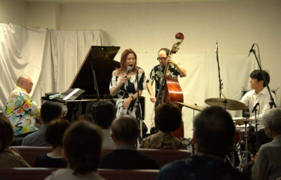
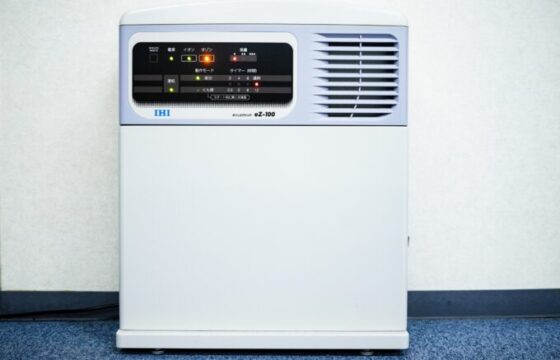
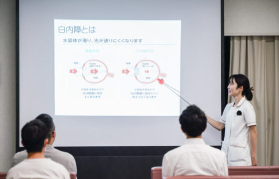

首 页
首诊患者指南
我们的团队
白内障和手术
我们的设备
最新信息
医院介绍
医院介绍
专科门诊の通知
隐形眼镜
医生和团队
医生和团队のご紹介
视光师のご紹介
Call
首 页
首诊患者指南
我们的团队
我们的团队
我们的团队名称
特检客服
白内障和手术
关于白内障
手术方式
我们的设备
最新信息
徐州市泉山区市中山南路196-1
点击拨打电话
topics
动态
专题资讯
近视进行抑制点眼薬の取り项目について
2025.04.18

专题资讯
慈善ジャズライブを行いました
2024.09.25
专题资讯
医疗DX推进体制整备加成说明
2024.09.21
专题资讯
慈善ジャズライブの医院资讯
2024.08.26
专题资讯
医疗情報取得加成说明
2024.05.29

专题资讯
新型コロナウイルス感染症対策について
2023.05.02
专题资讯
在线资格确认の导入について
2023.04.19

专题资讯
白内障手术の说明会について
2022.02.01
Category
通知
动态
Archive
请选择
2025年4月
2025年3月
2024年11月
2024年9月
2024年8月
2024年6月
2024年5月
2024年4月
2023年11月
2023年8月
2023年6月
2023年5月
2023年4月
2023年3月
2022年11月
2022年9月
2022年7月
2022年3月
2022年2月
RECRUIT
招聘信息
当院では一起働いてくれる员工を随时募集中です。
欢迎お問い合わせください。
 Call
Call